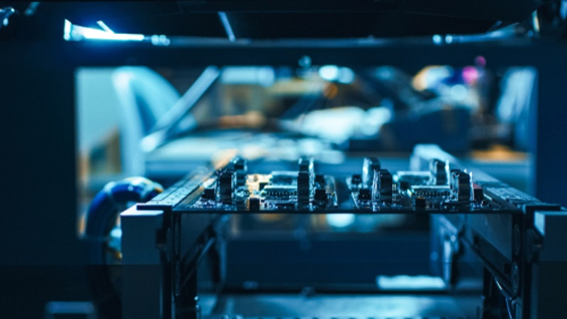

In telecommunications, an electronic switching system (ESS) is a telephone switch that uses solid-state electronics,
such as digital electronics) and computerized common control,
to interconnect telephone circuits for the purpose of establishing telephone calls.
The generations of telephone switches before the advent of electronic switching in the 1950s used purely
electro-mechanical relay systems and analog voice paths. These early machines typically utilized the step-by-step
technique. The first generation of electronic switching systems in the 1960s were not entirely digital in nature,
but used reed relay-operated metallic
paths or crossbar switches operated by stored program control (SPC) systems.
First announced in 1955, the first customer trial installation of an all-electronic central office commenced in Morris,
Illinois in November 1960 by Bell Laboratories.The first large-scale electronic switching system was the Number
One Electronic Switching System (1ESS) of the Bell System, cut over in Succasunna, New Jersey, in May 1965.
The adoption of metal oxide semiconductor (MOS) and pulse-code modulation (PCM) technologies in the 1970s led
to the transition from analog to digital telephony
Switching systems implemented the digital representation of the electrical audio signals on subscriber loops by
digitizing the analog signals and processing the resulting data for transmission between central offices.
Time-division multiplexing (TDM) technology permitted the simultaneous transmission of multiple telephone
calls on a single wire connection between central offices or other electronic switches,
resulting in dramatic capacity improvements of the telephone network.
Switching systems implemented the digital representation of the electrical audio signals on subscriber
loops by digitizing the analog signals and processing the resulting data for transmission between central offices.
Time-division multiplexing (TDM) technology permitted the simultaneous transmission of multiple telephone calls on a single wire connection between central offices or other electronic switches,
resulting in dramatic capacity improvements of the telephone network.